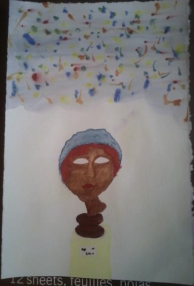

My Experiments with Watercolor

This is a washy watercolor painting created in my watercolor class
near the end of April 2014. I orignally was going to paint the
lonely mountain from the Hobbit but I changed my mind and
instead added the small desert town at it's base with the trade road
twisting around it's base.

For my watercolor class we also had to keep a watercolor, which
started me on my daily art adventures. This painting I created on a
rainy April somemthing, 2014. The premise of the painting is that
the bust is imaging her ethnicity, hat, make up and the rainbow
stars above her. I tried to show this with her empty eyes and the
surrounding beige museum.